This illustrated tutorial will introduce you to Pica Pica Messenger (or pica-client), the client software for a distributed, decentralised instant messaging system. The main goal of the Pica Pica project is to maintain the privacy of your communications by using strong end-to-end encryption based on modern cryptographic standards and protocols.
When you start pica-client for the first time, you'll have to create your new account.
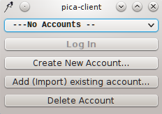
Click the "Create New Account..." button. Let's say you want to use Anonymous as your nickname. Type it in the "Name:" field. It is recommended to tick the "Set passphrase for the secret key" checkbox. In this case the private key associated with your account is encrypted with a passphrase, and you have to enter it on each login (the term "passphrase" is often used in cryptographic applications instead of "password"). Click the "Create" button and wait a little until the public/private key pair and the certificate that represents your account are generated.
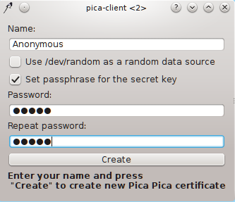
Pica Pica users are uniquely identified by their ID, which is the SHA224 hash of their certificate. Your ID will be displayed after the certificate is generated, and then you can copy it and send it to friends, put it on your website, print it on business cards, etc. The ID can be viewed at any time later by clicking the menu item "Account -> Show My Pica Pica ID". Pica Pica IDs have to look as cryptic as wYI8zxNi4XEcMCwi7BRdgOpwgiX+5e1mj6Xr1A== due to the decentralised nature of the system.
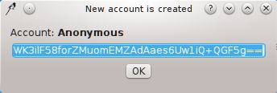
So you have successfully created your Pica Pica account. It's time to start using it. Click "OK" in the dialog box above and you'll see the initial window, but now the drop-down list contains your newly created account and the "Log In" button is enabled. Click this button.
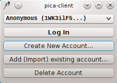
If you have set a passphrase for your account, a prompt will appear. Enter the passphrase and click "OK".
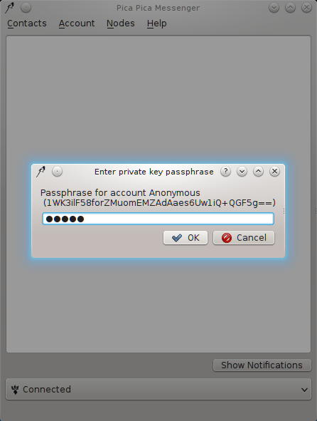
Now pica-client will try to make connections to known Pica Pica nodes and update the list of active nodes, i.e. nodes that are online, up and running. If a live node is found and the connection is successful, pica-client will change its state to "Connected" and the sitting bird icon (it is a common magpie, Latin name "Pica pica") in the system tray area will be changed to the flying bird icon. Now it's time to add some people to your contact list.
Let's suppose that your friend Jane Doe has sent her Pica Pica ID to you. Right-click on the empty area of the main window (or select the menu item "Contacts") and click "Add Contact...". Paste the received ID and click "OK".
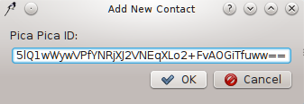
The newly added ID will appear in the contact list, but without a nickname yet. Double-click on this ID (or right-click and select "Start Chat"). A chat window will be opened. Say "hi" to Jane. If she is online at this moment, the message will be delivered and a "+" sign will appear to the left of the message. Also the ID entry in the contact list will be changed to her nickname and the ID in parentheses. Remember that the date and time shown in the chat window are your local date and time when the message was received or sent by you, not the date and time when it was actually sent or received by your peer. Messages are sent by pressing "Enter"; a newline is added with the combination "Shift"+"Enter". If your contact is not online, outgoing messages are stored in the local history and marked as undelivered. Pica-client periodically tries to deliver them.
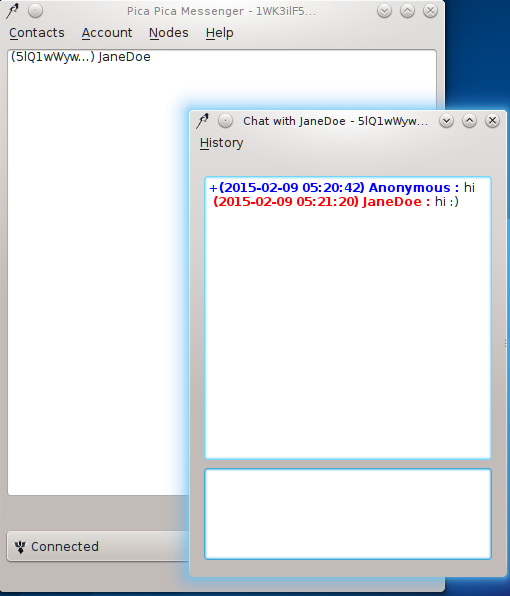
Now let's suppose that another friend of yours, John Smith, has received your Pica Pica ID, created his account and wants to chat with you. You will see this question:
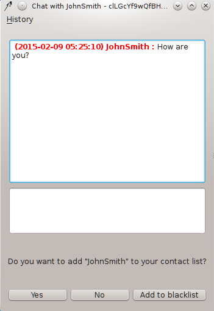
You can click "Yes" to add him, "No" to ignore him or "Add to blacklist" to ban him forever. Because he is a friend, you probably want to select "Yes". Then his name will appear in your contact list.
It is strongly recommended to always verify the Pica Pica IDs of your new contacts in order to prevent a "man-in-the-middle" attack. Key exchange and identity verification is a fundamental problem of encrypted communications, so you have to take it seriously. It's better to exchange Pica Pica IDs in person, but obviously that's not always possible. You can make phone calls to your contacts and ask them to read their Pica Pica ID and check that it matches the ID in your contact list (right-click on the contact and select "Show Pica Pica ID"), then read them your ID and make them verify it in their contact list. This procedure significantly reduces the risk of an adversary silently replacing the ID. However, I don't think that government agencies are totally incapable of imitating the voice of a selected person in real time :)
Upd (2026): real-time voice and face imitation is no longer limited to government agencies; it can now be done with AI models on consumer hardware. An adversary who controls the call could replace only the moments when the ID is read aloud, leaving the rest of the conversation genuine, so a voice call alone is no longer reliable verification. Prefer a video call where your contact also points the camera at the screen showing the ID, as this is harder (though not impossible) to fake. Also compare IDs over several independent channels, such as other messengers, email or a personal website, so that an adversary would have to compromise all of them.
You can exchange files using Pica Pica. Needless to say, file transfers are encrypted too. To send a file, right-click on a contact and select "Send File". A file selection dialog will ask you which file you want to send.
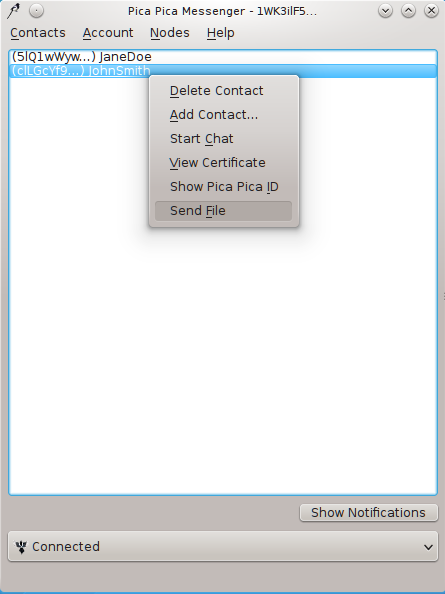
Then the file transfer window will show up.
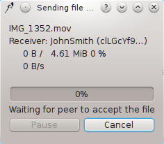
The receiver of the file has to click "Accept" in order to start the transfer.
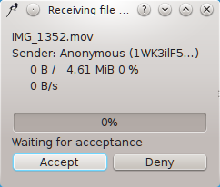
Then the file transfer starts.
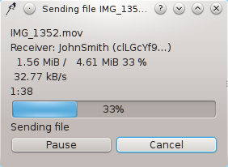